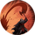

Вспарывание
Открыть в интерактивной вики →
Описание
Вспыльчивые от природы Варвары могут наброситься на врага с такой яростью, что практически разорвут его внутренности. Почти вслепую он колет и рубит оружием, открывая трудно заживающие раны, которые каждый раунд отнимают часть здоровья. Чем дольше кровотечение продолжается, тем сильнее оно становится. Раненый враг также получает более серьезные повреждения от Критического удара.
Тип: ближняя атака, дебафф
0.7*сила + 0.3*ловкость + оружие
Наносит пассивный урон
Тип: ближняя атака, дебафф
0.7*сила + 0.3*ловкость + оружие
Наносит пассивный урон
Уровни навыка
| Уровень навыка | Требуемый уровень | Урон | Шанс попадания | Выносливость | Раунды | Шанс на дополнительный эффект | Урон от навыка Критический удар | Раунды |
|---|---|---|---|---|---|---|---|---|
| I | 2 | 72% | +14% | 16 | +3 | +100% | *114% | 2 |
| II | 3 | 80% | +15% | 18 | +3 | +100% | *115% | 2 |
| III | 4 | 88% | +17% | 19 | +3 | +100% | *117% | 2 |
| IV | 5 | 96% | +18% | 21 | +3 | +100% | *118% | 2 |
| V | 6 | 104% | +20% | 22 | +3 | +100% | *120% | 2 |
| VI | 7 | 112% | +21% | 24 | +3 | +100% | *121% | 2 |
| VII | 8 | 120% | +23% | 26 | +3 | +100% | *123% | 2 |
| I | 9 | 128% | +24% | 28 | +3 | +100% | *124% | 2 |
| II | 10 | 136% | +26% | 30 | +3 | +100% | *126% | 2 |
| III | 11 | 144% | +27% | 33 | +3 | +100% | *127% | 3 |
| IV | 12 | 152% | +29% | 35 | +3 | +100% | *129% | 3 |
| V | 13 | 160% | +30% | 38 | +3 | +100% | *130% | 3 |
| VI | 14 | 168% | +32% | 40 | +3 | +100% | *132% | 3 |
| VII | 15 | 176% | +33% | 42 | +3 | +100% | *133% | 3 |
| I | 16 | 184% | +35% | 46 | +3 | +100% | *135% | 3 |
| II | 17 | 192% | +36% | 49 | +3 | +100% | *136% | 3 |
| III | 18 | 200% | +38% | 52 | +3 | +100% | *138% | 4 |
| IV | 19 | 208% | +39% | 55 | +3 | +100% | *139% | 4 |
| V | 20 | 216% | +41% | 58 | +3 | +100% | *141% | 4 |
| VI | 21 | 224% | +42% | 62 | +3 | +100% | *142% | 4 |
| VII | 22 | 232% | +44% | 65 | +3 | +100% | *144% | 4 |